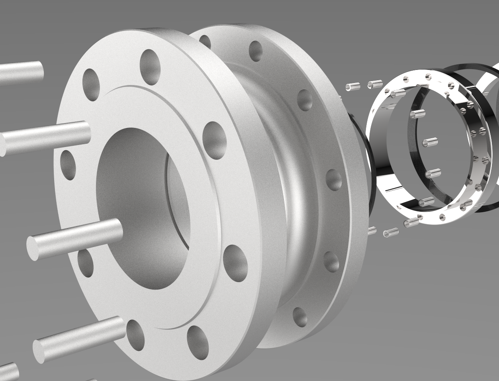
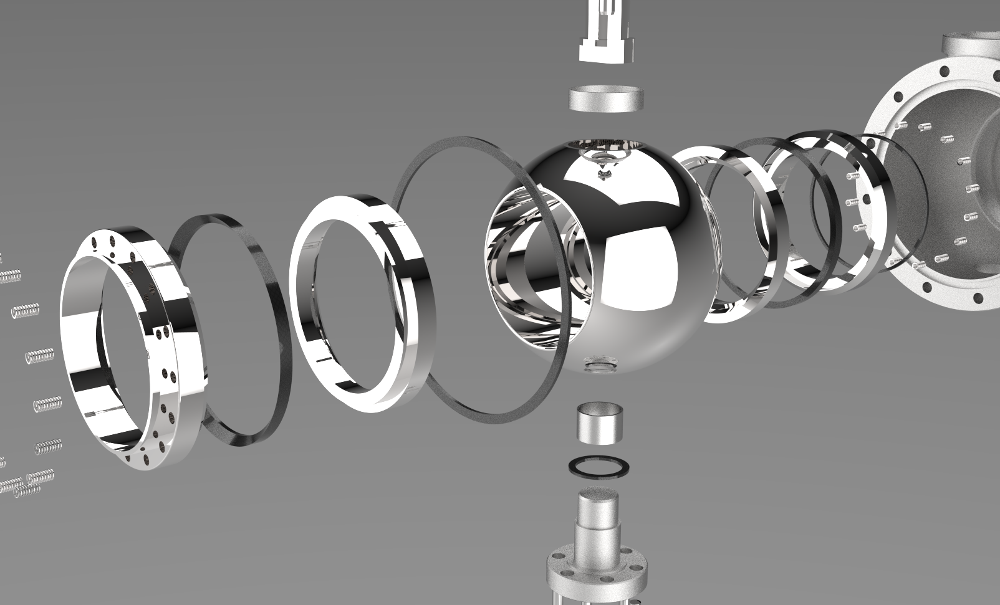
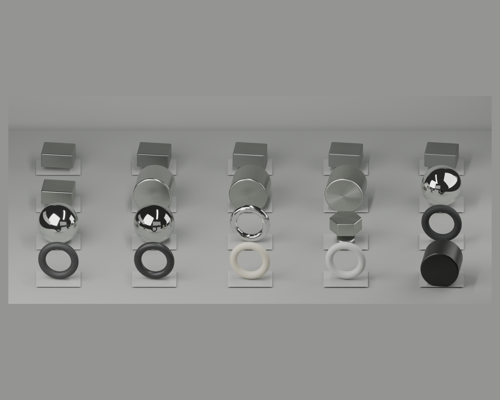
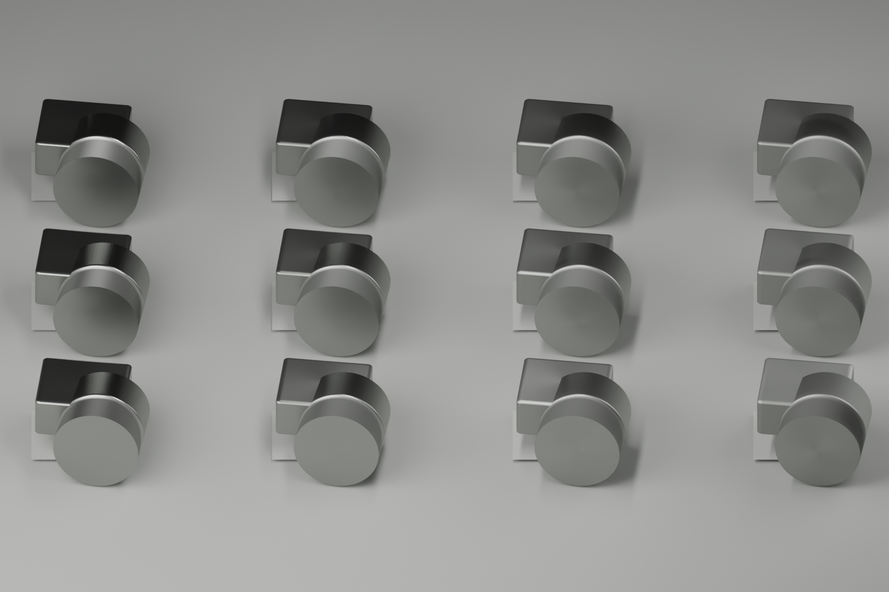

Goal 22 / Blender Cycles tiny material lab
商业参考在前，20 个材质小样在后
这轮只验证材质和棚拍反射，不导入整台阀门，不做网页 hero，不做 24 帧或 240 帧动画。喷砂不锈钢不再往白色粉末方向调，优先看中灰金属底色和受控高光。
Commercial References


Contact Sheet

Cast Satin Roughness Ladder

Swatch Order
cast_satin_baselinecast satin stainless baselinecast_darker_satincast darker satin stainlessfine_bead_blast_lowfine bead blast low contrastfine_bead_blast_normalfine bead blast stronger normalsandblast_mid_greysandblast grey midtonebrochure_satin_castbrochure-like smooth satinmachined_stainless_brightmachined stainless brightmachined_stainless_darkermachined stainless darkerbrushed_aniso_stainlessbrushed anisotropic stainlesspolished_ball_mirrorpolished stainless ball mirrorpolished_ball_soft_studiopolished ball soft studiopolished_ball_darkerpolished ball darker studiochrome_like_ringchrome-like machined ringfastener_stainlessfastener stainlessgraphite_matte_blackgraphite packing matte blackgraphite_slight_metalgraphite packing slight sheenblack_rubber_sealblack rubber sealptfe_warm_off_whitePTFE warm off-whiteptfe_pale_greyPTFE pale greydark_inner_boredark inner bore / cavity
Research Notes
- Poly Haven CC0 HDRIs / textures可用 CC0 studio HDRI 和反射环境，但本轮先用程序化棚拍反射板，避免下载依赖。
- ambientCG CC0 PBR materials有 CC0 PBR 贴图和 metal 类资源，可作为下一轮真实贴图库来源。
- Blender Principled BSDF金属/粗糙度/各向异性控制仍是 Blender/Cycles 主线做法。
- Sketchfab flanged valve examples只做视觉学习；下载或复用必须逐个检查模型授权。
- GrabCAD flanged ball valve examples常见工业 CAD/KeyShot 预览可学习镜头和材质，但授权不可默认商用复用。